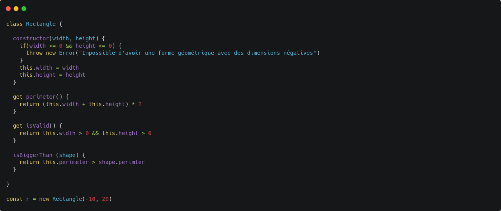
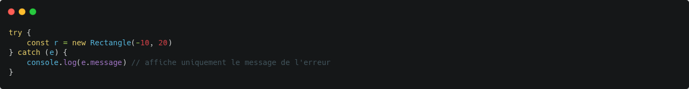
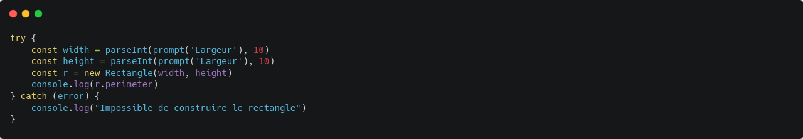
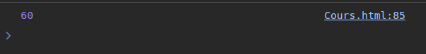
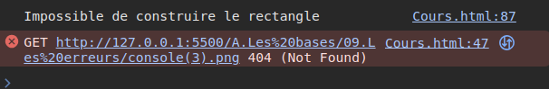
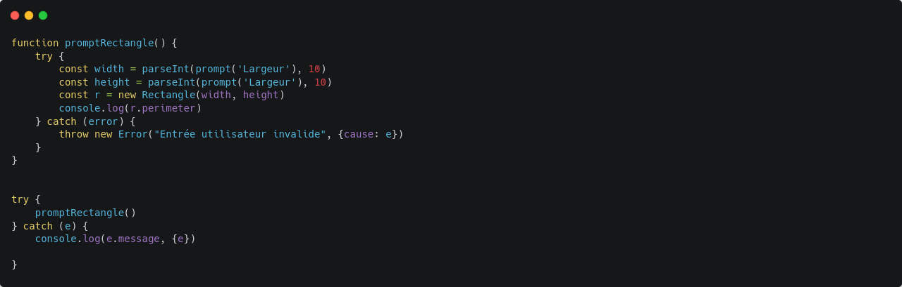
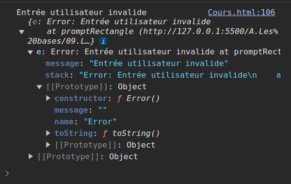

Les erreurs font parti des objets et comme les objets classiques, ils ont un prototype. De ce fait ils ont également des méthodes, des propriétés... .
Matérialisation d'une erreur dans un script PHP
Retour de la console
Automatiquement le reste du script ne sera pas exécuté.
Parfois on aura besoin de capturer une erreur
Retour de la console
Mise en application
Retour de la console
Retour de la console
Dans certains cas, il est plus intéressant de faire un re-throw c'est à dire d'envoyer une erreur différente et plus significative par rapport contexte. Il est également possible d'ajouter un second paramètre : la cause. L'idée est de mettre un code dans la cause (url, code d'erreur...).Le problème des erreurs en Javascript c'est qu'elles ne contienne pas beaucoup d'informations
Permet de donner une erreur plus précise à l'utilisateur
Retour de la console
Conseil :
L'utilisation des Erreurs restent plutôt classique dans le Javascript. Dès que l'on crée une fonction si des
paramètres amènent la fonction à ne pas marcher dans ce cas il faut les prendre en compte et faire un
throw new manuel. De plus renvoyer une erreur le plus tôt possible dans le code, permet
d'éviter les effets de bords qui peuvent survenir plus tard et qu'il est plus difficile d'appréhender par la
suite.
Ensuite, à vous de juger si une erreur est à capturer ou non : si aucune solution n'est envisageable
pour appréhender l'erreur, le throw new est ce qu'il y a de mieux afin d'arrêter complètement
le script. A l'inverse, si certaines choses peuvent être gérable ou des solutions de secours, alors dans ce
cas là on peut utiliser le try {} ... catch () {} pour capturer l'erreur et faire quelque chose en
fonction. Il est très simple, mais on peut y ajouter des condition pour attraper des erreurs pour réagir de
la meilleure des façon en fonction du type d'erreur rencontré.